DINOSSAUROS ICÔNICOS
As espécies mais marcantes da franquia Jurassic
Explore os dinossauros mais memoráveis da saga, desde os clássicos dos primeiros filmes até os híbridos e criaturas modificadas geneticamente das produções mais recentes.
| Nome | Espécie | Filmes em que apareceu | Foto |
|---|---|---|---|
| T-Rex | Tyrannosaurus rex | Jurassic Park, The Lost World, Jurassic Park III, Jurassic World, Reino Ameaçado, Domínio |
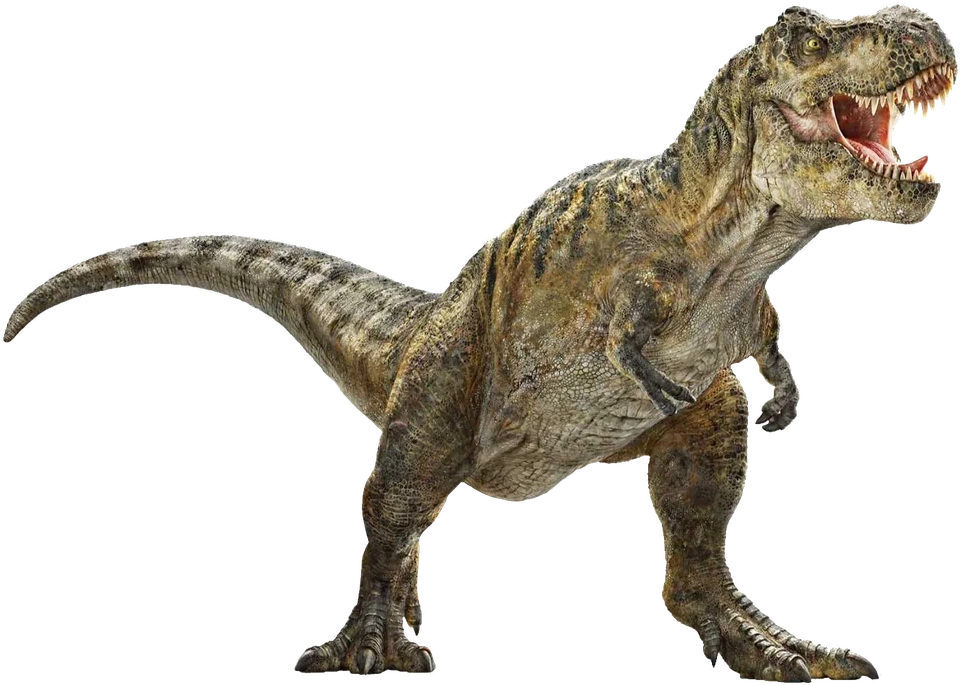 |
| Blue | Velociraptor | Jurassic World, Reino Ameaçado, Domínio |
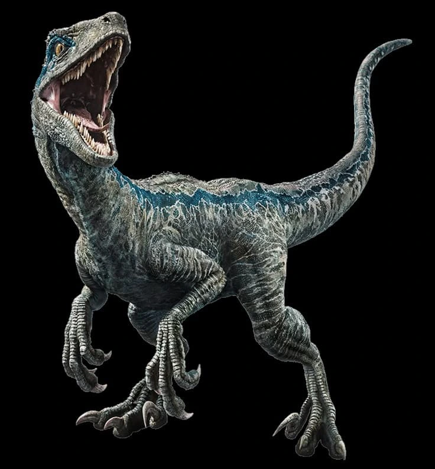 |
| Charlie | Velociraptor | Jurassic World |
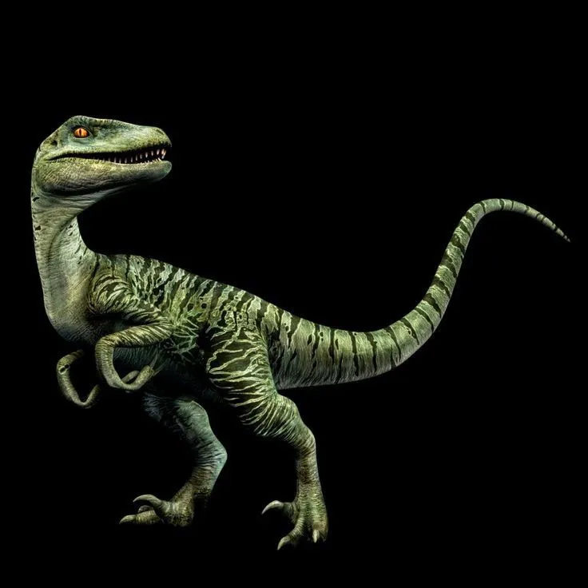 |
| Echo | Velociraptor | Jurassic World |
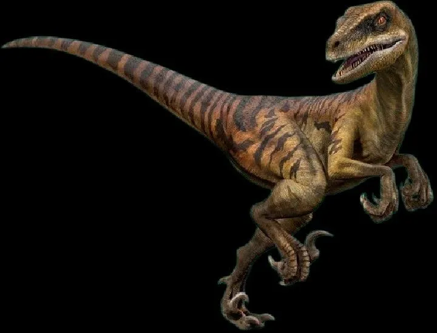 |
| Delta | Velociraptor | Jurassic World |
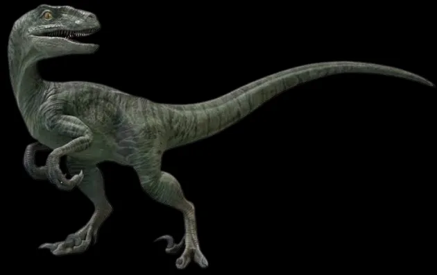 |
| Estegossauro | Stegosaurus | The Lost World, Jurassic World, Reino Ameaçado |
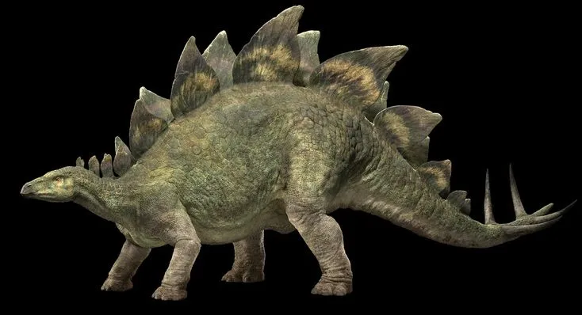 |
| Paquicefalossauro | Pachycephalosaurus | The Lost World, Jurassic World |

|
| Dilofossauro | Dilophosaurus | Jurassic Park, Domínio |

|
| Barionix | Baryonyx | Reino Ameaçado |
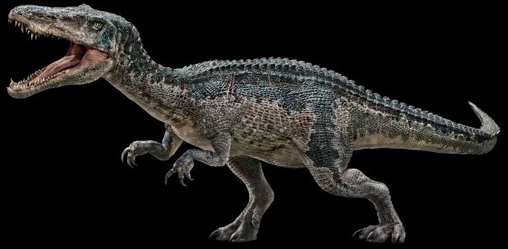 |
| Braquiossauro | Brachiosaurus | Jurassic Park, Jurassic World, Reino Ameaçado |
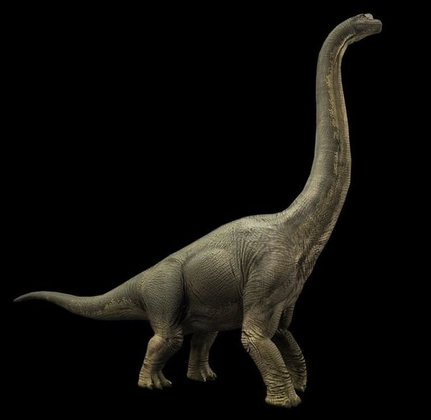 |
| Espinossauro | Spinosaurus | Jurassic Park III |
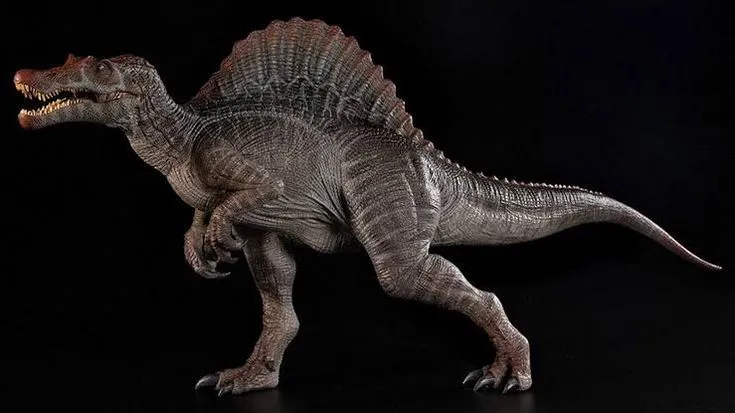 |
| Triceratops | Triceratops | Jurassic Park, The Lost World, Jurassic World, Domínio |
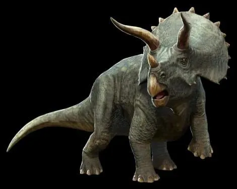 |
| Carnotauro | Carnotaurus | The Lost World, Reino Ameaçado, Domínio |
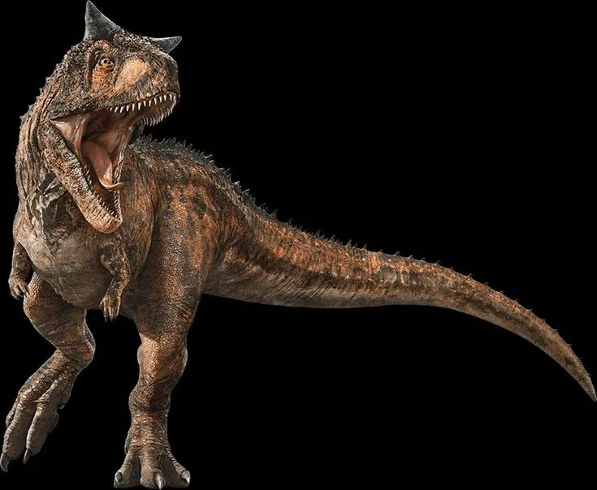 |
| Compsognato | Compsognathus | The Lost World, Jurassic Park III |
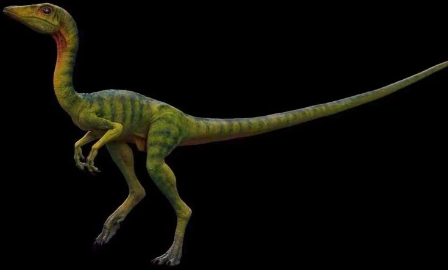 |
| Anquilossauro | Ankylosaurus | Jurassic Park III, Jurassic World, Reino Ameaçado |
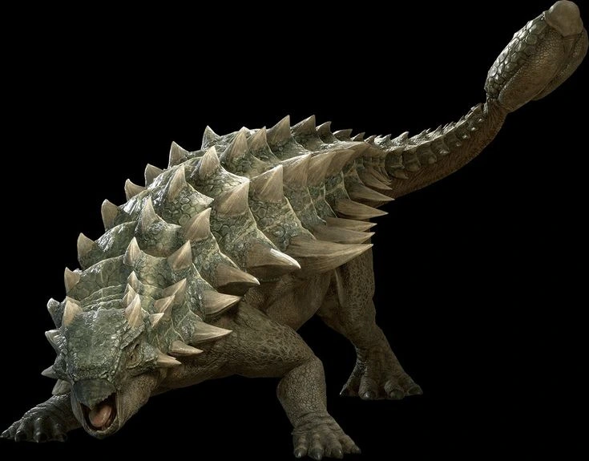 |
| Apatossauro | Apatosaurus | Jurassic Park, Jurassic World, Reino Ameaçado |
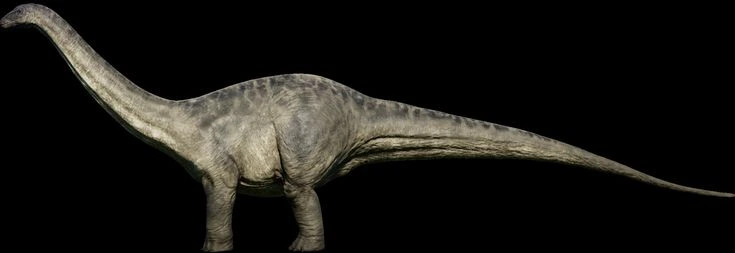 |
| Ceratossauro | Ceratosaurus | Jurassic Park III |
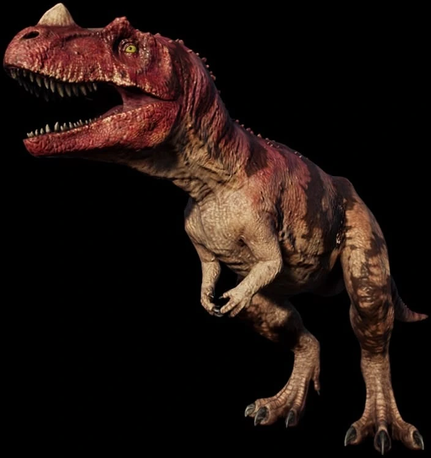 |
| Parassaurolofo | Parasaurolophus | Jurassic Park, The Lost World, Jurassic World, Domínio |
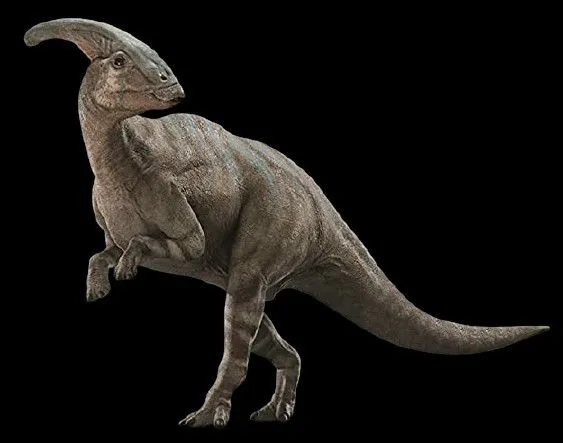 |
| Stygimoloch | Stygimoloch | Reino Ameaçado |
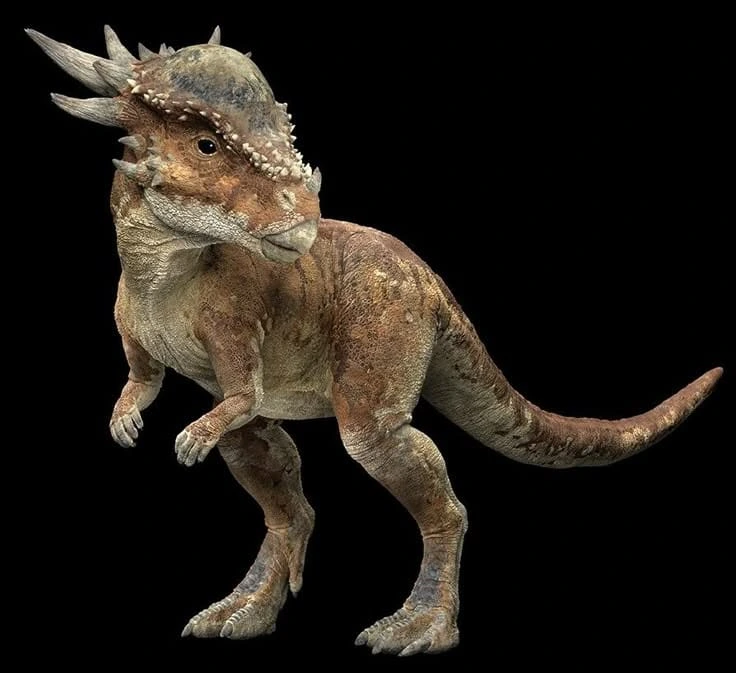 |
| Mosassauro | Mosasaurus | Jurassic World, Reino Ameaçado, Domínio |

|
| Pteranodon | Pteranodon | Jurassic Park III, Jurassic World |
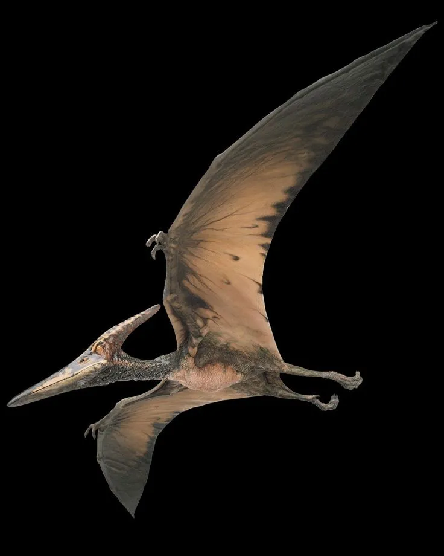 |
| Indominus rex | Híbrido genético | Jurassic World |
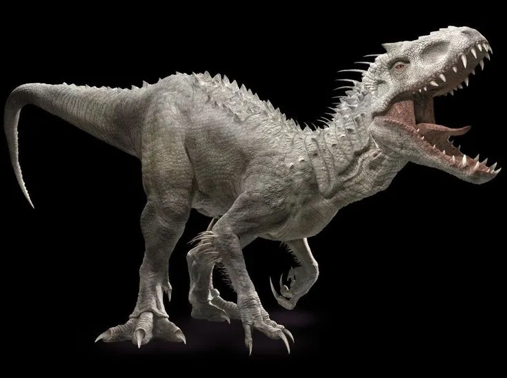 |
| Indoraptor | Híbrido genético | Reino Ameaçado |
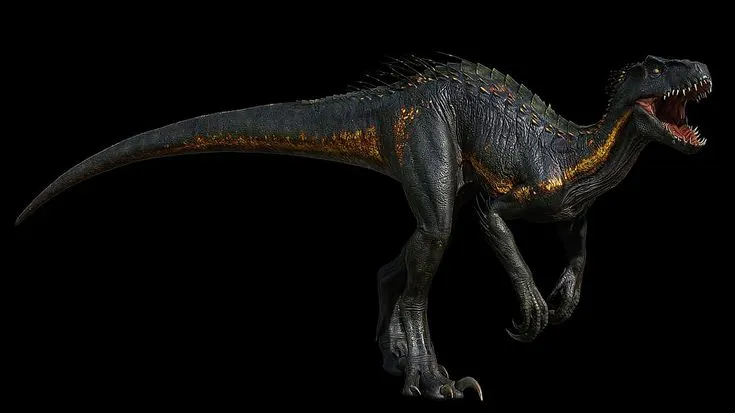 |
| Pyroraptor | Pyroraptor | Domínio |
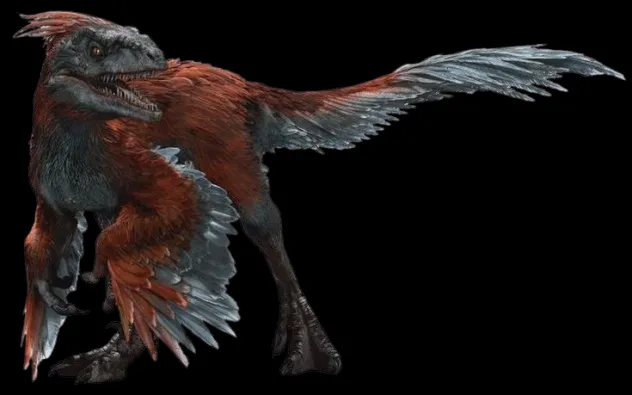 |
| Therizinosaurus | Therizinosaurus | Domínio |

|
| Distortus rex (D-Rex) | Híbrido genético | Recomeço |
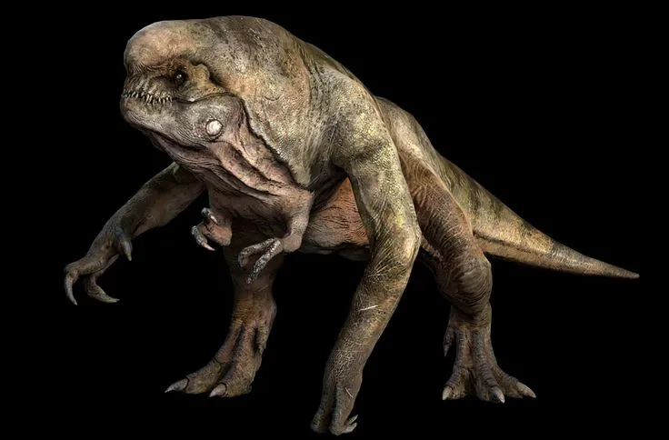 |
| Quetzalcoatlus | Quetzalcoatlus | Recomeço |
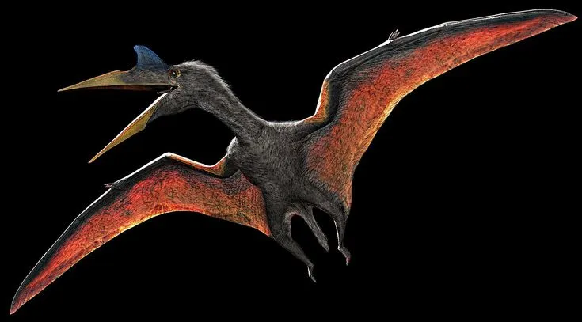 |
| Mutadon | Híbrido genético fracassado de dinossauro e pterossauro | Recomeço |
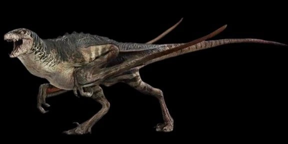 |
| Titanosaurus | Titanosaurus modificado geneticamente | Recomeço |

|